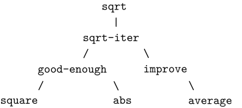
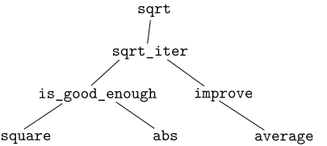

Sqrt
The function sqrt
is our first example of a process defined by a set of mutually
defined procedures.
defined functions.
Notice that the
definition of sqrt-iter
definition of
sqrt_iter
is
recursive; that is, the
procedure
function
is defined in terms of itself. The idea of being able to define a
procedure
function
in terms of itself may be disturbing; it may seem unclear how such a
circular
definition could make sense at all, much less
specify a well-defined process to be carried out by a computer. This will
be addressed more carefully in
section 1.2. But first
let's consider some other important points illustrated by the
sqrt example.
Observe that the problem of computing square roots breaks up naturally into a number of subproblems: how to tell whether a guess is good enough, how to improve a guess, and so on. Each of these tasks is accomplished by a separate procedure. function. The entire sqrt program can be viewed as a cluster of procedures (shown in figure 1.3) functions (shown in figure 1.4) that mirrors the decomposition of the problem into subproblems.
| Original | Python | |
|

Figure 1.3 Procedural decomposition of the
sqrt program.
|

Figure 1.4 Functional decomposition of the
sqrt program.
|
The importance of this
decomposition strategy is not simply that one
is dividing the program into parts. After all, we could take any
large program and divide it into parts—the first ten lines, the next
ten lines, the next ten lines, and so on. Rather, it is crucial that
each
procedure
function
accomplishes an identifiable task that can be used as a module in defining
other
procedures.
functions.
For example, when we define the
good-enough? procedure
is_good_enough function
in terms of square, we are able to
regard the square
procedure
function
as a
black box.
We are not at that moment concerned with
how the
procedure
function
computes its result, only with the fact that it computes the
square. The details of how the square is computed can be suppressed,
to be considered at a later time. Indeed, as far as the
good-enough? procedure
is_good_enough function
is concerned, square is not quite a
procedure
function
but rather an abstraction of a
procedure,
function,
a so-called
procedural abstraction.
functional abstraction.
At this level of abstraction, any
procedure
function
that computes the square is equally good.
Thus, considering only the values they return, the following two procedures functions squaring a number should be indistinguishable. Each takes a numerical argument and produces the square of that number as the value.[1]
| Original | Python |
| (define (square x) (* x x)) | def square(x): return x * x |
| Original | Python |
| (define (square x) (exp (double (log x)))) (define (double x) (+ x x)) | def square(x): return math_exp(double(math_log(x))) def double(x): return x + x |
So a procedure function should be able to suppress detail. The users of the procedure function may not have written the procedure function themselves, but may have obtained it from another programmer as a black box. A user should not need to know how the procedure function is implemented in order to use it.
One detail of a procedure's function's implementation that should not matter to the user of the procedure function is the implementer's choice of names for the procedure's formal parameters. function's parameters. Thus, the following procedures functions should not be distinguishable:
| Original | Python |
| (define (square x) (* x x)) | def square(x): return x * x |
| Original | Python |
| (define (square y) (* y y)) | def square(y): return y * y |
| Original | Python |
| (define (good-enough? guess x) (< (abs (- (square guess) x)) 0.001)) | def is_good_enough(guess, x): return abs(square(guess) - x) < 0.001 |
If the parameters were not local to the bodies of their respective procedures, functions, then the parameter x in square could be confused with the parameter x in good-enough?, is_good_enough, and the behavior of good-enough? is_good_enough would depend upon which version of square we used. Thus, square would not be the black box we desired.
A formal parameter of a procedure parameter of a function has a very special role in the procedure definition, function definition, in that it doesn't matter what name the formal parameter has. Such a name is called a bound variable, and we say that the procedure definition bound, and we say that the function definition binds its formal parameters. parameters. The meaning of a procedure definition is unchanged if a bound variable function definition is unchanged if a bound name is consistently renamed throughout the definitiondefinition.[2] If a variable name is not bound, we say that it is free. The set of expressions statements for which a binding defines defines a name is called the scope of that name. In a procedure definition, the bound variables function definition, the bound names declared as the formal parameters of the procedure parameters of the function have the body of the procedure function as their scope.
In the definition of good-enough? definition of is_good_enough above, guess and x are bound variables but <, -, abs and square are free. The meaning of good-enough? is_good_enough should be independent of the names we choose for guess and x so long as they are distinct and different from <, -, abs and square. (If we renamed guess to abs we would have introduced a bug by capturing the variable abs. It would have changed from free to bound.) The meaning of good-enough? is_good_enough is not independent of the names of its free variables, however. It surely depends upon the fact (external to this definition) (external to this definition) that the symbol abs names a procedure that the name abs refers to a function for computing the absolute value of a number. Good-enough? The function is_good_enough will compute a different function if we substitute cos math_cos (the primitive cosine function) for abs in its definition. definition.
We have one kind of name isolation available to us so far: The formal parameters of a procedure The parameters of a function are local to the body of the procedure. function. The square-root program illustrates another way in which we would like to control the use of names. The existing program consists of separate procedures: functions:
| Original | Python |
| (define (sqrt x) (sqrt-iter 1.0 x)) (define (sqrt-iter guess x) (if (good-enough? guess x) guess (sqrt-iter (improve guess x) x))) (define (good-enough? guess x) (< (abs (- (square guess) x)) 0.001)) (define (improve guess x) (average guess (/ x guess))) | def sqrt(x): return sqrt_iter(1, x) def sqrt_iter(guess, x): return (guess if is_good_enough(guess, x) else sqrt_iter(improve(guess, x), x)) def is_good_enough(guess, x): return abs(square(guess) - x) < 0.001 def improve(guess, x): return average(guess, x / guess) |
The problem with this program is that the only procedure function that is important to users of sqrt is sqrt. The other procedures functions (sqrt-iter, good-enough?, (sqrt_iter, is_good_enough, and improve) only clutter up their minds. They may not define any other procedure define any other function called good-enough? is_good_enough as part of another program to work together with the square-root program, because sqrt needs it. The problem is especially severe in the construction of large systems by many separate programmers. For example, in the construction of a large library of numerical procedures, functions, many numerical functions are computed as successive approximations and thus might have procedures functions named good-enough? is_good_enough and improve as auxiliary procedures. functions. We would like to localize the subprocedures, subfunctions, hiding them inside sqrt so that sqrt could coexist with other successive approximations, each having its own private good-enough? procedure. is_good_enough function. To make this possible, we allow a procedure function to have internal definitions that are local to that procedure. function. For example, in the square-root problem we can write
| Original | Python |
| (define (sqrt x) (define (good-enough? guess x) (< (abs (- (square guess) x)) 0.001)) (define (improve guess x) (average guess (/ x guess))) (define (sqrt-iter guess x) (if (good-enough? guess x) guess (sqrt-iter (improve guess x) x))) (sqrt-iter 1.0 x)) | def sqrt(x): def is_good_enough(guess, x): return abs(square(guess) - x) < 0.001 def improve(guess, x): return average(guess, x / guess) def sqrt_iter(guess, x): return (guess if is_good_enough(guess, x) else sqrt_iter(improve(guess, x), x)) return sqrt_iter(1, x) |
The body of a function definition forms a block; definitions inside it are local to the function. Such nesting of definitions, definitions, called block structure, is basically the right solution to the simplest name-packaging problem. But there is a better idea lurking here. In addition to internalizing the definitions of the auxiliary procedures, definitions of the auxiliary functions, we can simplify them. Since x is bound in the definition definition of sqrt, the procedures functions good-enough?, is_good_enough, improve, and sqrt-iter, which are defined internally to sqrt_iter, which are defined internally to sqrt, are in the scope of x. Thus, it is not necessary to pass x explicitly to each of these procedures. functions. Instead, we allow x to be a free variable name in the internal definitions, definitions, as shown below. Then x gets its value from the argument with which the enclosing procedure function sqrt is called. This discipline is called lexical scoping.[3]
| Original | Python |
| (define (sqrt x) (define (good-enough? guess) (< (abs (- (square guess) x)) 0.001)) (define (improve guess) (average guess (/ x guess))) (define (sqrt-iter guess) (if (good-enough? guess) guess (sqrt-iter (improve guess)))) (sqrt-iter 1.0)) | def sqrt(x): def is_good_enough(guess): return abs(square(guess) - x) < 0.001 def improve(guess): return average(guess, x / guess) def sqrt_iter(guess): return (guess if is_good_enough(guess) else sqrt_iter(improve(guess))) return sqrt_iter(1) |
We will use block structure extensively to help us break up large programs into tractable pieces.[4] The idea of block structure originated with the programming language Algol 60. It appears in most advanced programming languages and is an important tool for helping to organize the construction of large programs.
obviousimplementation is the less efficient one. Consider a machine that has extensive tables of logarithms and antilogarithms stored in a very efficient manner.